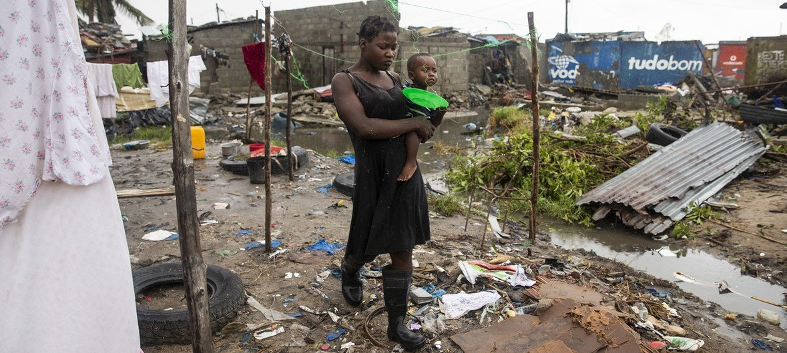
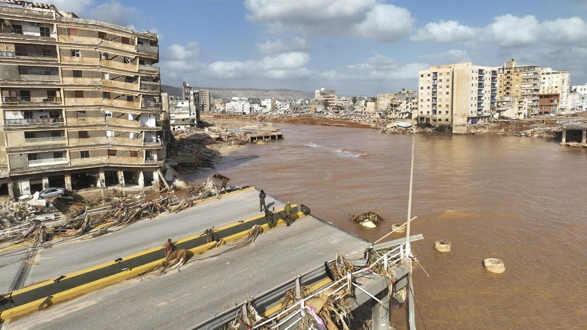
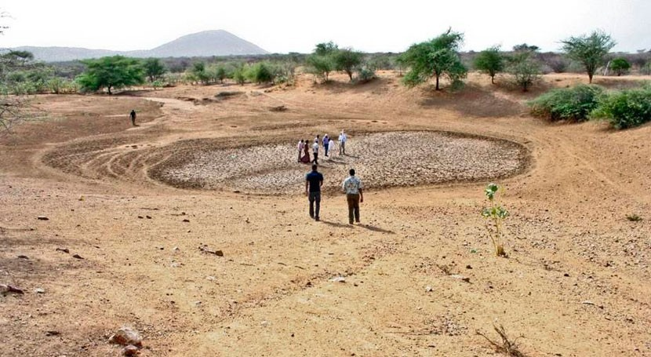
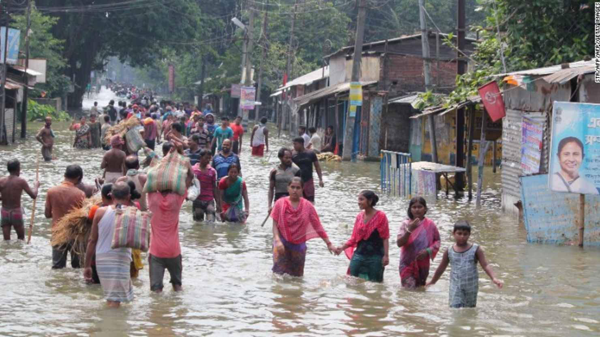
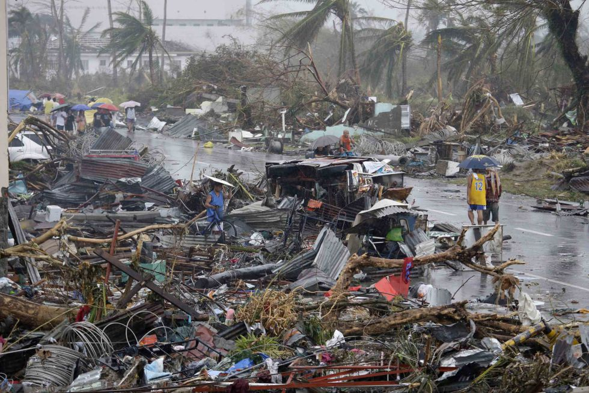

DESASTRES NATURALES
Los fenómenos climatológicos extremos son procesos naturales que se producen durante los ciclos meteorológicos. Siempre ha habido huracanes, sequías, incendios, inundaciones y temporales de viento. Sin embargo, actualmente estamos siendo testigos de un nivel de destrucción y devastación totalmente nuevo y aterrador.
CICLON IDAI
En marzo de 2019, el ciclón Idai se cobró la vida de más de 1000 personas en Zimbabue, Malawi y Mozambique, y tuvo consecuencias devastadoras para millones de personas más que se quedaron sin alimentos o acceso a servicios básicos. Los letales corrimientos de tierra arrasaron casas, cultivos e infraestructuras. Tan solo seis semanas más tarde, el ciclón Kenneth asoló el norte de Mozambique, llegando a zonas donde nunca se habían observado ciclones tropicales desde que estos se monitorizan por satélite
TORMENTA DANIEL
La tormenta Daniel, también conocida como ciclón Daniel, fue el ciclón de tipo tropical mediterráneo más mortífero jamás registrado, así como el fenómeno meteorológico más mortífero durante 2023. Causó daños catastróficos en Libia y también afectó a partes del sudeste de Europa. Formándose como un sistema de baja presión alrededor del 4 de septiembre de 2023, la tormenta afectó a Grecia y Bulgaria con grandes inundaciones. Con 4.333 personas fallecidas y una cantidad aproximada de 8540 desaparecidos.
SEQUÍA EN ÁFRICA ORIENTAL
El aumento de las temperaturas del mar, ligado al cambio climático, ha duplicado la probabilidad de que se produzcan sequías en la región del Cuerno de África. Las graves sequías de 2011, 2017 y 2019 han devastado los cultivos y el ganado repetidamente, empujando a 15 millones de personas en Etiopía, Kenia y Somalia a una crisis humanitaria. Sin embargo, el llamamiento humanitario tan solo ha recibido el 35% de los fondos solicitados. Numerosas personas se han quedado sin medios para conseguir alimentos y se han visto obligadas a abandonar sus hogares. Millones de personas sufren escasez de agua y alimentos.
INUNDACIONES EN EL SUR DE ASIA
Durante 2023, las inundaciones y corrimientos de tierra han obligado a 12 millones de personas a dejar sus hogares en la India, Nepal y Bangladesh. Hace tan solo dos años, las excepcionalmente intensas lluvias monzónicas y las graves inundaciones devastaron las vidas de numerosas personas en estos mismos países. En algunos lugares, las inundaciones fueron las peores en casi 30 años. Un tercio de Bangladesh quedó sumergido bajo el agua. Aunque se esperan ciertas inundaciones durante la época del Monzón, la comunidad científica afirma que las lluvias monzónicas se han intensificado en la región como consecuencia del aumento de las temperaturas de la superficie del mar en el sur de Asia.
TIFÓN HAIYAN
En 2013 el tifón Haiyan, uno de los más fuertes de la historia de Filipinas, ha cambiado radicalmente el paisaje de la costa de algunas islas del archipiélago, donde se calcula que ha causado más de 10.000 muertes y ha dejado un paisaje de destrucción total y en completa desesperación a los afectados. La ciudad de Tacloban, hasta la fecha la más afectada del país, en la provincia oriental de Leyte, fue de las primeras que golpeó Haiyan, denominado Yolanda en Filipinas, con ráfagas de viento de hasta 315 kilómetros por hora
Tabla con los datos de los paises con mas desastres naturales al año
| País | Número de Desastres Naturales (2023) | Detalles | ||
|---|---|---|---|---|
| Tipo de Desastres Más Comunes | Impacto Económico (en miles de millones de USD) | Número de Víctimas | ||
| Estados Unidos | 20 | Huracanes, Tornados | 95 | 500 |
| China | 17 | Inundaciones, Terremotos | 70 | 800 |
| India | 17 | Inundaciones, Ciclones | 45 | 1000 |
| Indonesia | 15 | Terremotos, Tsunamis | 30 | 600 |
| Vietnam | 12 | Tifones, Inundaciones | 20 | 300 |
INFORMACION SACADA DE:
- Wikipedia
- 10 catástrofes ambientales más devastadores del siglo XXI
- 5 desastres naturales que reclaman medidas contra el cambio climático
- Informacion de la tabla obtenida por IA